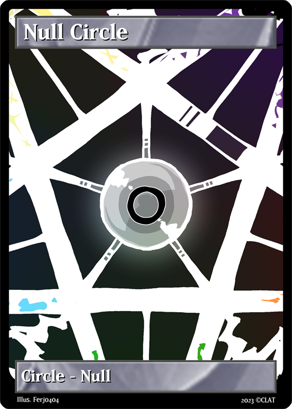
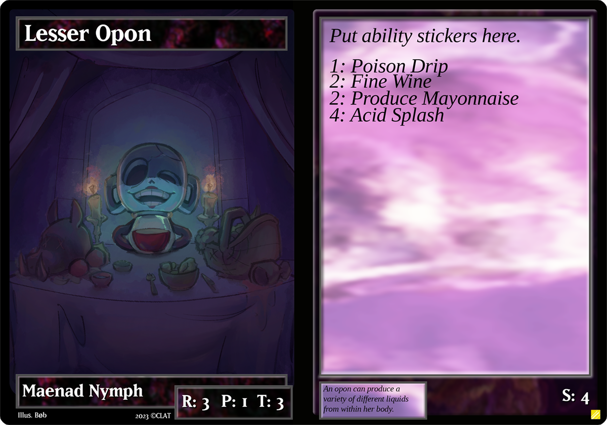
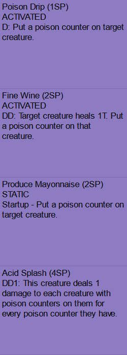
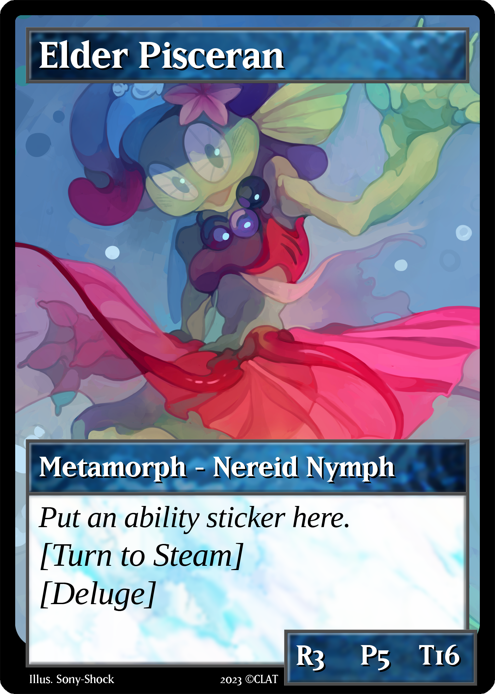
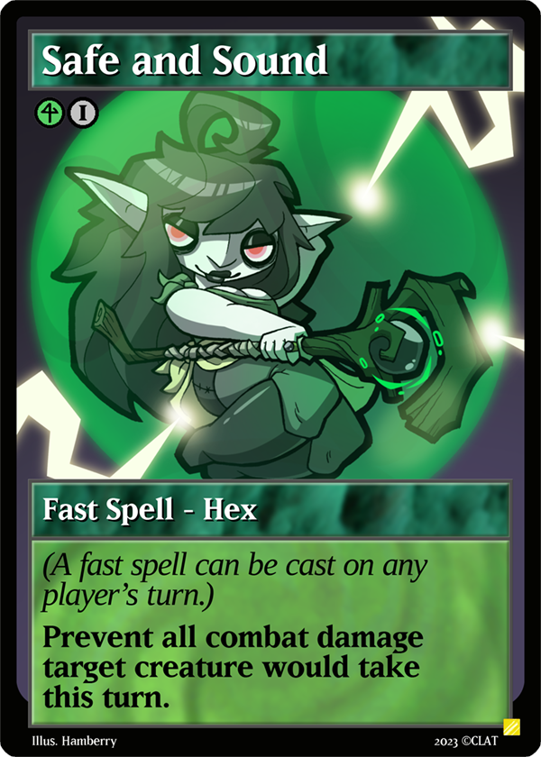
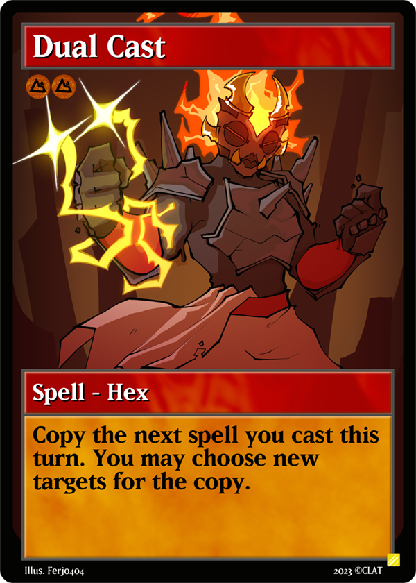
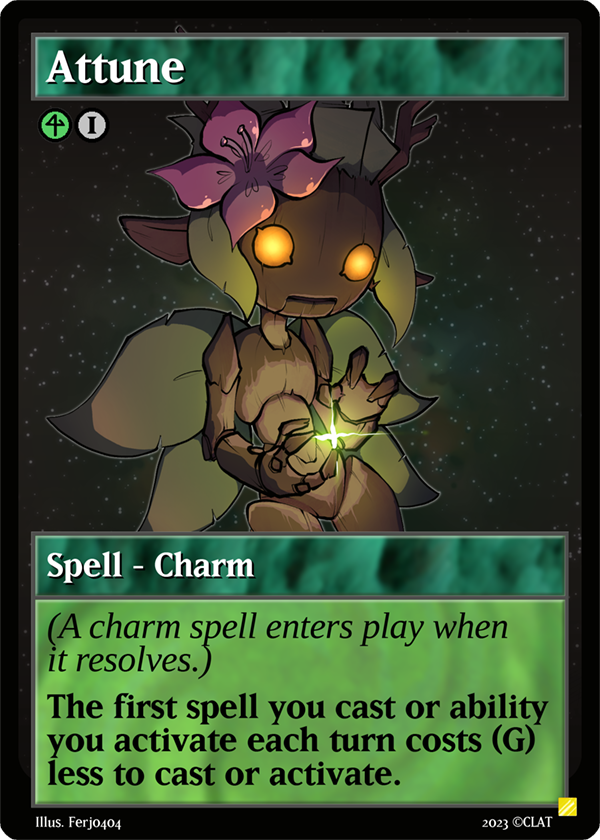
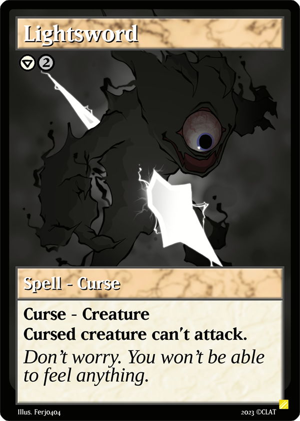
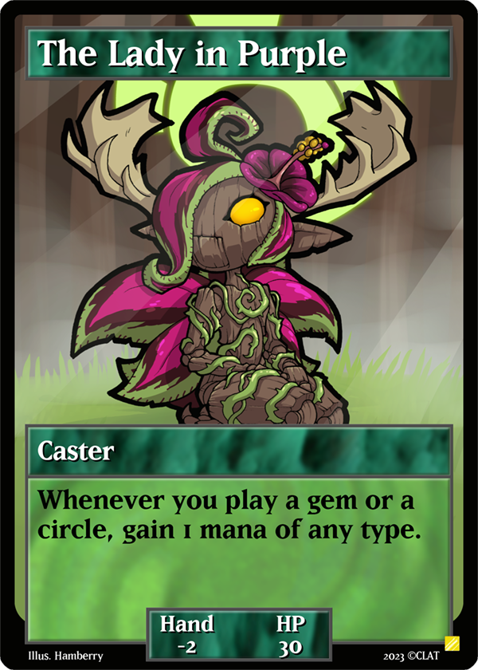

Cards. That's what you're here for. This is a card game! Well, I have 'em. Listed on this page is each card type and a general overview of how they work.
|  | CircleCircles are the main resource of the game. Circles go into a player's deck. A player can play one circle on their turn, and only on their turn. Controlling a circle increases your level in the listed type of mana (growth, flow, heat, order, dread, or null) by 1. At the beginning of a player's turn, they restore mana up to their level in mana. Mana is a resource that goes into your mana pool, where it remains until you spend it. For example, if a player's growth level is 5, and they have 3 growth mana in their mana pool, they will only restore 2 growth mana. If that same player had 5 or more growth mana in their mana pool, they would restore no growth mana. |
|
|  | CreatureCreatures are very important cards. They are double-sized cards that act as both your primary win condition, and your primary lose condition. During deck construction, you can spend your creature's Skill Points (indicated by the S in the bottom right corner of the creature card) to apply a listed ability sticker onto the creature card. This allows customization and personalization of your creature cards. Each player starts the game with 6 creature cards, 3 in play, 3 in reserve. A player can switch one creature with another in reserve each turn by paying the retreat cost (indicated by the R) in any type of mana. When all of a player's creatures die, that player loses. |
 |
|  | MetamorphMetamorphs are cards that a player uses to upgrade their creatures. Metamorphs are played by putting the metamorph on top of the art portion of a corresponding creature card. The metamorph becomes part of that creature and replaces the stats of the previous visible face. In addition, the creature gets one new ability sticker. Much like creatures, during deck construction, players put one ability sticker listed on the card onto the metamorph. When a creature metamorphs, all of its T is healed. |
|
|  | SpellSpells are a type of card that goes into a player's deck. A player may cast a spell by spending the listed amount of mana, which is shown below the title bar. Normally, a player is only allowed to cast a spell on their turn if the stack is empty, but if the spell is a fast spell, they can cast the spell on any player's turn whenever they have priority. There are different types of spells that have different rules that determine what happens when they resolve after being cast. |
|
|  | Spell - HexHexes are a spell subtype. When a hex resolves after being played, the ability written on the card is performed, then the hex is put into its owner's discard pile. |
|
|  | Spell - CharmCharms are a spell subtype. When a charm resolves after being played, it enters play as a charm object. They remain in play until something gets rid of it. The ability printed on the card only functions while in play. |
|
|  | Spell - CurseCurses are a spell subtype. When a player casts a curse, they target whatever is listed after the "curse -" in the textbox. When a curse resolves after being played, it enters play as a curse object that is attached to the targeted object. They remain in play until something gets rid of it. The ability printed on the card only functions while in play. |
|
|  | CasterCasters are a unique card type used only in the 4 player game mode. Rather than creatures, each player controls a caster. Casters have an ability on them, and they also modify your starting hand size. When a caster dies, its controller loses the game. |
All this shit belongs to me, by the way. Don't use without permission!